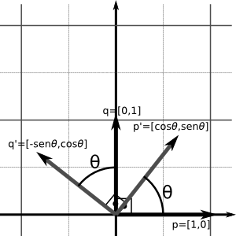
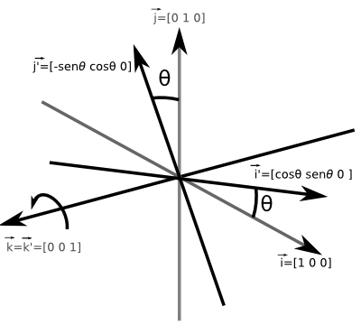
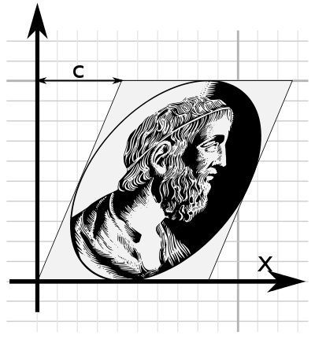
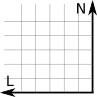
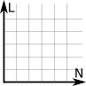
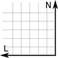
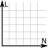
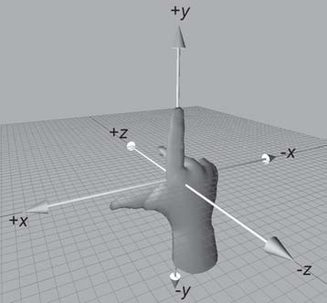
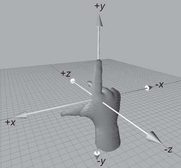

Conceito
Tupla \([x_1,x_2, ...,x_n]\) , com \(x_i \in R^n, 1 \le i \le n\) .
Magnitude
Direção
Sentido
Dimensão: \(n\)
Vetor Linha: \[\begin{bmatrix}1&2&3\end{bmatrix}\]
Vetor Coluna: \[\begin{bmatrix}1\\2\\3\end{bmatrix}\]
Conceito
\(\vec{v}_{linha}^T = \vec{v}_{coluna}\) Notação coluna: \([1,2,3]^T\)
\(\vec{a}\) como \([a_1,a_2,a_3,a_4]\) ou \([a_x,a_y,a_z,a_w]\) .
Ponto
Tupla \((x_1,x_2, ...,x_n)\) , com \(x_i \in R^n, 1 \le i \le n\) .
Notação: \(()\) para ponto e \([]\) para vetor
representa uma posição não tem direção não tem sentido não tem magnitude tem posição
representa um deslocamento tem direção tem sentido tem magnitude não tem uma posição específica
Ponto
Ex: \(A=(-23,46)\) e \(B=(50,20)\)
De \(A\) a \(B\) , o deslocamento \(\vec{d}=[50-(-23),20-46]=[73,66]\)
\(\vec{d}=[73,66]\) é diferente de um ponto \(C=(73,66)\)
Ponto
Relacionando vetor e ponto:
\(A - B = \vec{v}\) \(A + \vec{v} = B\) \(\vec{v} + \vec{w} = \vec{z}\)
Vetor zero
\([0,0,\dots,0]^T\) Identidade da adição
Não há direção (ou então há todos)
Melhor pensar como Sem deslocamento
Negar um vetor
\(-\vec{a}= -[a_1,a_2,\dots,a_n]^T = [-a_1,-a_2,\dots,-a_n]^T\)
Geometricamente invertes o sentido do vetor:
Magnitude
Norma, comprimento ou intensidade.
O vetor \([3,4]^T\) tem magnitude nem 3 nem 4, mas 5.
\(\|\vec{v}\| = \sqrt{v_1^2 + v_2^2 + ... + v_{n-1}^2 + v_n^2}\)
\(\|\vec{v}\| = \sqrt{\sum^{n}_{i=1}{v_i^2}}\)
Geometricamente, usando pitágoras:
Magnitude
\(v_x\) e \(v_y\) podem ser valores negativos, todavia \(\|\vec{v}\|\) não é.Já que \(|x|^2 = x^2\) então as equações seguintes são equivalentes:
\(\|\vec{v}\|^2 = |v_1|^2 + |v_2|^2\)
\(\|\vec{v}\|^2 = v_1^2 + v_2^2\)
Multiplicação por um escalar
\[
k
\begin{bmatrix} v_1 \\ v_2 \\ \vdots \\ v_n \end{bmatrix}
=
\begin{bmatrix} v_1 \\ v_2 \\ \vdots \\ v_n \end{bmatrix}
k
=
\begin{bmatrix} kv_1 \\ kv_2 \\ \vdots \\ kv_n \end{bmatrix}
\]
Multiplicação por um escalar
Divisão: multiplicar por \(\frac{1}{k}\) .
Omite-se o símbolo de multiplicação;
Antes da adição: \(3\vec{a} + \vec{b} = (3\vec{a})+\vec{b} \neq 3(\vec{a}+\vec{b})\) ;
\(\nexists k/\vec{v}\) e \(\nexists \vec{v}/\vec{w}\) ;\(-\vec{v} = -1\vec{v}\) .
Multiplicação por um escalar
Mantém o sentido, muda a magnitude (proporcional a \(k\) ).
Normalização
Para onde o vento está orientado nesse ponto?
Para onde esse fóton está indo?
Essa cidade fica ao norte ou ao leste daqui?
Na sinuca, em que direção o taco deve se orientar para acertar a bola?
Normalização
Normal, versor ou vetor unitário;
\(\|\vec{v}\| = 1\) ; não tem versor;
Basta dividir pela magnitude
\(\vec{v}_{norm} = \frac{\vec{v}}{\|v\|}\)
Normalização
Adição e Subtração de vetores
Na adição, \(\vec{a} + \vec{b} = \vec{b} + \vec{a}\) :
\[
\begin{bmatrix} a_1 \\ a_2 \\ \vdots \\ a_n \end{bmatrix}
+
\begin{bmatrix} b_1 \\ b_2 \\ \vdots \\ b_n \end{bmatrix}
=
\begin{bmatrix} a_1 + b_1 \\ a_2 + b_2 \\ \vdots \\ a_n + b_n \end{bmatrix}
\]
Adição e Subtração de vetores
Na subtração, \(\vec{a} - \vec{b} = - (\vec{b} - \vec{a})\) :
\[
\begin{bmatrix} a_1 \\ a_2 \\ \vdots \\ a_n \end{bmatrix}
-
\begin{bmatrix} b_1 \\ b_2 \\ \vdots \\ b_n \end{bmatrix}
=
\begin{bmatrix} a_1 - b_1 \\ a_2 - b_2 \\ \vdots \\ a_n - b_n \end{bmatrix}
\]
Adição e Subtração de vetores
Adição: se eu caminhar por uma sequência de lugares, qual o deslocamento do primeiro lugar para o último?
Subtração: se eu sair daqui para um dos dois outros lugares, qual é o deslocamento entre estes destinos? É longe um do outro?
Adição e Subtração de vetores
Representando um vetor como uma soma (sequência) ponderada
\[
\begin{bmatrix} a_1 \\ a_2 \\ \vdots \\ a_n \end{bmatrix}
=
a_1\begin{bmatrix} 1 \\ 0 \\ \vdots \\ 0 \end{bmatrix}
+
a_2\begin{bmatrix} 0 \\ 1 \\ \vdots \\ 0 \end{bmatrix}
+
\dots
+
a_n\begin{bmatrix} 0 \\ 0 \\ \vdots \\ 1 \end{bmatrix}
\]
Distância entre pontos
Pontos A e B
\(v = A-B = [a_1 - b_1,a_2-b_2,\dots,a_n-b_n]^T\) .A distância entre A e B é a magnitude \(\|v\| = \sqrt{(a_1-b_1)^2+(a_2-b_2)^2+\dots+(a_n-b_n)^2}\)
Produto Escalar
Resultado: uma escalar
\(\vec{a}\cdot\vec{b} = a_1b_1 + a_2b_2 + \dots + a_nb_n\) .Soma de multiplicações elemento-a-elemento.
O quão similares são os vetores
\(\vec{a}\cdot\vec{b} = \|\vec{a}\|\|\vec{b}\|cos(\theta)\) Versores: \(\vec{a}\cdot\vec{b} = cos(\theta)\)
Projetando um vetor no outro
\(\|\vec{v}_\parallel\| = \|\vec{v}\|cos(\theta)\) .\(\vec{v}\cdot\vec{w} = \|\vec{v}\|\|\vec{w}\|cos(\theta)\) \(\frac{\vec{v}\cdot\vec{w}}{\|\vec{w}\|} = \|\vec{v}\|cos(\theta)\) \(\|\vec{v}_\parallel\| = \frac{\vec{v}\cdot\vec{w}}{\|\vec{w}\|}\) \(\vec{v}_\parallel = \frac{\vec{w}}{\|\vec{w}\|}\|\vec{v}_\parallel\| = \vec{w}\frac{\vec{v}\cdot\vec{w}}{\|\vec{w}\|^2}\)
Projetando um vetor no outro
Para vetores unitários: \(\vec{v}_\parallel = \vec{w}(\vec{v}\cdot\vec{w})\)
\(\vec{v}\cdot\vec{w} = \vec{v}^T\vec{w}\)
Produto Vetorial
Resultado: um vetor perpendicular aos dois
\[
\begin{bmatrix} x_1 \\ y_1 \\ z_1 \end{bmatrix}
\times
\begin{bmatrix} x_2 \\ y_2 \\ z_2 \end{bmatrix}
=
\begin{bmatrix} y_1z_2 - y_2z_1 \\ x_1z_2 - z_1x_2 \\ x_1y_2-y_1x_2 \end{bmatrix}
\]
Para capturar o primeiro elemento
Remova a primeira linha (\(x_1\) e \(x_2\) )
Determinante da matriz com os elem. restantes
Determinante usando expansão em cofatores
Produto Vetorial
\([x,y,z]^T\) como \(x\vec{i}+y\vec{j}+z\vec{k}\) \(\vec{i} = [1,0,0]^T\) , \(\vec{j} = [0,1,0]^T\) e \(\vec{k} = [0,0,1]^T\)
\[
\vec{v}\times\vec{w} =
\begin{bmatrix}
\vec{i} & \vec{j} & \vec{k} \\
v_1 & v_2 & v_3 \\
w_1 & w_2 & w_3
\end{bmatrix}
\]
Produto Vetorial
Que eu saiba, com dois vetores distintos, há outros dois vetores que são perpendiculares a eles. Qual deles é o resultado do produto vetorial?
Produto Vetorial
Regra da mão direita
polegar no primeiro vetor
outros dedos no segundo vetor
produto vetorial saindo da palma da mão
Veja se o ? é o \(\vec{w}\times\vec{v}\)
Então \(\vec{v}\times\vec{w} = -\) $
Produto Vetorial
\(\|\vec{v}\times\vec{w}\| = \|\vec{w}\times\vec{v}\| = Area_{paralelogramo}\)
\[
\begin{split}
Area_{paralelogramo} & = bh \\
& = \|\vec{v}\|h \\
& = \|\vec{v}\|\|\vec{w}\|sen(\theta)
\end{split}
\]
Introdução
Multidimensional;
Retangular;
Uma matriz \(l\times c\) tem \(l\) linhas e \(c\) colunas.
\(M = [m_{ij}]\) , onde \(1 \le i \le l\) e \(1 \le j \le c\)
\[M=\begin{bmatrix}
m_{11} & m_{12} & \dots & m_{1c} \\
m_{21} & m_{22} & \dots & m_{2c} \\
\vdots & \vdots & \ddots & \vdots \\
m_{l1} & m_{l2} & \dots & m_{lc}
\end{bmatrix}
\]
Introdução
Vetor linha \(\vec{v}_{1\times c}\) e coluna \(\vec{v}_{l\times 1}\)
Se \(M_{l\times c}=[m_{ij}]\) , então \(M^T_{c\times l}=[m_{ji}]\) , \(1 \le i \le l\) e \(1 \le j \le c\)
\((M^{T})^T = M\)
Multiplicação de uma matriz por uma escalar
\[kM =
k\begin{bmatrix} m_{11} & m_{12} & m_{13} \\ m_{21} & m_{22} & m_{23} \\ m_{31} & m_{32} & m_{33}\end{bmatrix} = \begin{bmatrix}km_{11} & km_{12} & km_{13} \\ km_{21} & km_{22} & km_{23} \\ km_{31} & km_{32} & km_{33}\end{bmatrix}\]
Multiplicação entre Matrizes
\[AB = [a_{ij}][b_{ij}] = [a_{ij}b_{ij}]\]
Outra forma, mais usada. Ex: Equações Lineares\[\begin{array}\\\color{red}{a_{11}}x_1 + \color{red}{a_{12}}x_2 + \color{red}{a_{13}}x_3 + \color{red}{a_{14}}x_4 = b_1 \\\color{red}{a_{21}}x_1 + \color{red}{a_{22}}x_2 + \color{red}{a_{23}}x_3 + \color{red}{a_{24}}x_4 = b_2 \\\color{red}{a_{31}}x_1 + \color{red}{a_{32}}x_2 + \color{red}{a_{33}}x_3 + \color{red}{a_{34}}x_4 = b_3 \\\color{red}{a_{41}}x_1 + \color{red}{a_{42}}x_2 + \color{red}{a_{43}}x_3 + \color{red}{a_{44}}x_4 = b_4\end{array}\]
1ª Equação: produto interno entre o vetor \([\color{red}{a_{11}, a_{12}, a_{13}, a_{14}}]^T\) e o vetor \([x_1,x_2,x_3,x_4]^T\) .
Multiplicação entre Matrizes
\[
\begin{array}\\[\color{red}{a_{11}, a_{12}, a_{13}, a_{14}}][x_1,x_2,x_3,x_4]^T = b_1 \\
[\color{red}{a_{21}, a_{22}, a_{23}, a_{24}}][x_1,x_2,x_3,x_4]^T = b_2 \\
[\color{red}{a_{31}, a_{32}, a_{33}, a_{34}}][x_1,x_2,x_3,x_4]^T = b_3 \\
[\color{red}{a_{41}, a_{42}, a_{43}, a_{44}}][x_1,x_2,x_3,x_4]^T = b_4
\end{array}
\]
Multiplicação entre Matrizes
\[
\begin{bmatrix} \color{red}{a_{11}} & \color{red}{a_{12}} & \color{red}{a_{13}} & \color{red}{a_{14}} \\
\color{red}{a_{21}} & \color{red}{a_{22}} & \color{red}{a_{23}} & \color{red}{a_{24}} \\
\color{red}{a_{31}} & \color{red}{a_{32}} & \color{red}{a_{33}} & \color{red}{a_{34}} \\
\color{red}{a_{41}} & \color{red}{a_{42}} & \color{red}{a_{43}} & \color{red}{a_{44}}
\end{bmatrix}
\begin{bmatrix}x_1 \\ x_2 \\ x_3 \\ x_4 \end{bmatrix}
=
\begin{bmatrix}b_1 \\ b_2 \\ b_3 \\ b_4 \end{bmatrix}
\]
Abreviando\[\color{red}{A}\vec{x} = \vec{b}\]
Multiplicação entre Matrizes
Relação entre linhas da 1ª Matriz e colunas da 2ª Matriz.
\[A_{l \times n}B_{n \times c} = C_{l \times c}\]
\[c_{ij} = \sum^{n}_{k=1}{a_{ik}b_{kj}}\]
Multiplicação entre Matrizes
Multiplicar uma matriz \(M\) por uma matriz quadrada \(Q\) (em qualquer um dos lados) mantém o tamanho de \(M\) (a multiplicação precisa ser válida);
Se \(I\) é a matriz identidade\(MI = IM = M\) ;
Multiplicação de matrizes não é comutativa:\(AB \neq BA\) ;
Multiplicação de matrizes é associativa:\((AB)C = A(BC)\) ;
Multiplicação entre Matrizes
\((kA)B = k(AB) = A(kB)\) e \((\vec{v}A)B = \vec{v}(AB)\) \((AB)^T = B^TA^T\) .\((A_{l \times n}B_{n \times c})^T = B^T_{c \times n}A^T_{n \times l}\) \((M_1M_2 \cdots M_n)^T = M_n^T\cdots M_2^TM_1^T\)
Multiplicar um vetor e uma matriz
\[
\begin{align}
\begin{bmatrix}x & y & z\end{bmatrix}\begin{bmatrix}m_{11} & m_{12} & m_{13}\\m_{21} & m_{22} & m_{23}\\m_{31} & m_{32} & m_{33}\end{bmatrix} &= \begin{bmatrix}xm_{11} + ym_{21} + zm_{31} & xm_{12} + ym_{22} + zm_{32} & xm_{13} + ym_{23} + zm_{33}\end{bmatrix}\\
\begin{bmatrix}m_{11} & m_{12} & m_{13}\\m_{21} & m_{22} & m_{23}\\m_{31} & m_{32} & m_{33}\end{bmatrix}\begin{bmatrix}x \\ y \\ z\end{bmatrix} &= \begin{bmatrix}xm_{11} + ym_{12} + zm_{13} \\ xm_{21} + ym_{22} + zm_{23} \\ xm_{31} + ym_{32} + zm_{33}\end{bmatrix}\\
\begin{bmatrix}m_{11} & m_{12} & m_{13}\\m_{21} & m_{22} & m_{23}\\m_{31} & m_{32} & m_{33}\end{bmatrix}\begin{bmatrix}x & y & z\end{bmatrix} &= indefinido\\
\begin{bmatrix}x \\ y \\ z\end{bmatrix}\begin{bmatrix}m_{11} & m_{12} & m_{13}\\m_{21} & m_{22} & m_{23}\\m_{31} & m_{32} & m_{33}\end{bmatrix} &= indefinido
\end{align}
\]
Multiplicar um vetor e uma matriz
\[\begin{bmatrix}xm_{11} + ym_{21} + zm_{31} & xm_{12} + ym_{22} + zm_{32} & xm_{13} + ym_{23} + zm_{33}\end{bmatrix}\]
\[\begin{bmatrix}xm_{11} + ym_{12} + zm_{13} \\ xm_{21} + ym_{22} + zm_{23} \\ xm_{31} + ym_{32} + zm_{33}\end{bmatrix}\]
Os valores não são iguais!
OpenGL usa vetor coluna
DirectX usa vetor linha
Interpretação Geométrica
\[
\begin{split}
\begin{bmatrix} v_1 \\ v_2 \\ v_3 \end{bmatrix} & =
1\begin{bmatrix} v_1 \\ 0 \\ 0 \end{bmatrix} +
1\begin{bmatrix} 0 \\ v_2 \\ 0 \end{bmatrix} +
1\begin{bmatrix} 0 \\ 0 \\ v_3 \end{bmatrix} \\
& =
v_1\begin{bmatrix} 1 \\ 0 \\ 0 \end{bmatrix} +
v_2\begin{bmatrix} 0 \\ 1 \\ 0 \end{bmatrix} +
v_3\begin{bmatrix} 0 \\ 0 \\ 1 \end{bmatrix} \\
& =
v_1\vec{i} + v_2\vec{j} + v_3\vec{k} \\
& = \begin{bmatrix}\vec{i}&\vec{j}&\vec{k}\end{bmatrix}\begin{bmatrix}v_1\\v_2\\v_3\end{bmatrix} \\
& =
\begin{bmatrix}1&0&0\\0&1&0\\0&0&1\\\end{bmatrix}\begin{bmatrix}v_1\\v_2\\v_3\end{bmatrix}
\end{split}
\]
Interpretação Geométrica
Representando \(\vec{v}\) , \(\vec{i}\) e \(\vec{j}\) (2D)
Interpretação Geométrica
E se trocarmos a identidade por outra matriz. Ex:
\[
\begin{bmatrix}
2 & 0 & 0 \\
0 & 3 & 0 \\
0 & 0 & 5
\end{bmatrix}
\begin{bmatrix}
v_1 \\
v_2 \\
v_3
\end{bmatrix}
=
\begin{bmatrix}
2v_1 \\
3v_2 \\
5v_3 \\
\end{bmatrix}
\]
A matriz transformou um vetor em outro;
Combinação linear de elementos (da matriz e do vetor);
Interpretação Geométrica
Mas como eu sei que transformação uma dada matriz provoca? Resposta: Veja como os VETORES BASE se transformam!!!
Interpretação Geométrica
Como o vetor \(\vec{i}\) se transforma?
\[
\begin{bmatrix}
\color{red}{m_{11}} & m_{12} & m_{13} \\
\color{red}{m_{21}} & m_{22} & m_{23} \\
\color{red}{m_{31}} & m_{32} & m_{33}
\end{bmatrix}
\begin{bmatrix}
1 \\ 0 \\ 0
\end{bmatrix}
=
\begin{bmatrix}
\color{red}{m_{11}} \\ \color{red}{m_{21}} \\ \color{red}{m_{31}}
\end{bmatrix}
\]
Como o vetor \(\vec{j}\) se transforma?
\[
\begin{bmatrix}
m_{11} & \color{green}{m_{12}} & m_{13} \\
m_{21} & \color{green}{m_{22}} & m_{23} \\
m_{31} & \color{green}{m_{32}} & m_{33}
\end{bmatrix}
\begin{bmatrix}
0 \\ 1 \\ 0
\end{bmatrix}
=
\begin{bmatrix}
\color{green}{m_{12}} \\ \color{green}{m_{22}} \\ \color{green}{m_{32}}
\end{bmatrix}
\]
Como o vetor \(\vec{k}\) se transforma?
\[
\begin{bmatrix}
m_{11} & m_{12} & \color{blue}{m_{13}} \\
m_{21} & m_{22} & \color{blue}{m_{23}} \\
m_{31} & m_{32} & \color{blue}{m_{33}}
\end{bmatrix}
\begin{bmatrix}
0 \\ 0 \\ 1
\end{bmatrix}
=
\begin{bmatrix}
\color{blue}{m_{13}} \\ \color{blue}{m_{23}} \\ \color{blue}{m_{33}}
\end{bmatrix}
\]
Interpretação Geométrica
Então as próprias colunas das matrizes são o resultado da transformação dos vetores \(\vec{i}\) , \(\vec{j}\) e \(\vec{k}\) (Na regra da mão esquerda, são as linhas).
Ex:\[
M = \begin{bmatrix}
2 & -1\\
1 & 2\\
\end{bmatrix}
\]
\(\vec{i}\) se transforma em \([2,1]^T\) \(\vec{j}\) se transforma em \([-1,2]^T\)
Interpretação Geométrica
Uma espécie de escala e rotação.
Transformações lineares
Rotação
Escala
Projeção Ortográfica
Reflexão
Cisalhamento
Rotação em 2D

\[R(\theta)=\begin{bmatrix}
\vec{p'} & \vec{q'}
\end{bmatrix}
=
\begin{bmatrix}
cos\theta & -sen\theta \\
sen\theta & cos\theta
\end{bmatrix}\]
Rotação em 3D
\[R_x(\theta)=
\begin{bmatrix}
\vec{i'} &
\vec{j'} &
\vec{k'}
\end{bmatrix}=
\begin{bmatrix}
1 & 0 & 0 \\
0 & cos(\theta) & -sen(\theta) \\
0 & sen(\theta) & cos(\theta)
\end{bmatrix}\]
Rotação em 3D
\[R_y(\theta)=
\begin{bmatrix}
\vec{i'} &
\vec{j'} &
\vec{k'}
\end{bmatrix}=\begin{bmatrix}
cos(\theta) & 0 & sen(\theta) \\
0 & 1 & 0 \\
-sen(\theta) & 0 & cos(\theta)
\end{bmatrix}\]
Rotação em 3D

\[R_z(\theta)=
\begin{bmatrix}
\vec{i'} &
\vec{j'} &
\vec{k'}
\end{bmatrix}=\begin{bmatrix}
cos(\theta) & -sen(\theta) & 0 \\
sen(\theta) & cos(\theta) & 0 \\
0 & 0 & 1
\end{bmatrix}\]
Rotação sobre um eixo arbitrário
\[\begin{align}
\vec{v}_\parallel & = (\vec{v}\cdot \vec{n})\vec{n} \\
\vec{v}_\perp & = v - \vec{v}_\parallel \\
& = v - (\vec{v}\cdot \vec{n})\vec{n} \\
\vec{w} & = \vec{n} \times \vec{v}_\perp \\
& = \vec{n} \times (\vec{v} - \vec{v}_\parallel) \\
& = \vec{n} \times \vec{v} - \vec{n} \times \vec{v}_\parallel\\
& = \vec{n} \times \vec{v} - \vec{0}\\
& = \vec{n} \times \vec{v}\\
\vec{v}_\perp' & = cos(\theta)\vec{v}_\perp + sen(\theta)\vec{w} \\
& = cos(\theta)(\vec{v} - (\vec{v}\cdot \vec{n})\vec{n}) + sen(\theta)(\vec{n}\times\vec{v})\\
\vec{v}' & = \vec{v}_\perp' + \vec{v}_\parallel \\
& = cos(\theta)(\vec{v} - (\vec{v} \cdot \vec{n})\vec{n}) + sen(\theta)(\vec{n}\times\vec{v}) + (\vec{v}\cdot\vec{n})\vec{n}
\end{align}
\]
Rotação sobre um eixo arbitrário
\[\begin{align}
\vec{i} & = \begin{bmatrix}1&0&0\end{bmatrix}^T \\
\vec{i}' & = cos(\theta)(\vec{i} - (\vec{i} \cdot \vec{n})\vec{n}) + sen(\theta)(\vec{n}\times\vec{i}) + (\vec{i}\cdot\vec{i})\vec{n} \\
& = cos(\theta)\left(
\begin{bmatrix}1\\0\\0\end{bmatrix}-\left(
\begin{bmatrix}1\\0\\0\end{bmatrix} \cdot
\begin{bmatrix}n_x\\n_y\\n_z\end{bmatrix}
\right)
\begin{bmatrix}n_x\\n_y\\n_z\end{bmatrix}
\right)
+sen(\theta)\left(
\begin{bmatrix}n_x\\n_y\\n_z\end{bmatrix}\times
\begin{bmatrix}1\\0\\0\end{bmatrix}
\right)
+\left(
\begin{bmatrix}1\\0\\0\end{bmatrix}\cdot
\begin{bmatrix}n_x\\n_y\\n_z\end{bmatrix}
\right)
\begin{bmatrix}n_x\\n_y\\n_z\end{bmatrix} \\
& = cos(\theta)\left(
\begin{bmatrix}1\\0\\0\end{bmatrix}-
n_x\begin{bmatrix}n_x\\n_y\\n_z\end{bmatrix}
\right) +
sen(\theta)\begin{bmatrix}0\\n_z\\-n_y\end{bmatrix}+
n_x\begin{bmatrix}n_x\\n_y\\n_z\end{bmatrix} \\
& = cos(\theta)\begin{bmatrix}1-n_x^2\\-n_xn_y\\-n_xn_z\end{bmatrix}+
sin(\theta)\begin{bmatrix}0\\n_z\\-n_y\end{bmatrix} +
\begin{bmatrix}n_x^2\\n_xn_y\\n_xn_z\end{bmatrix} \\
& = \begin{bmatrix}cos(\theta)-n_x^2cos(\theta)\\-n_xn_ycos(\theta)\\-n_xn_zcos(\theta)\end{bmatrix} +
\begin{bmatrix}0\\n_zsen(\theta)\\-n_ysen(\theta)\end{bmatrix} +
\begin{bmatrix}n_x^2\\n_xn_y\\n_xn_z\end{bmatrix}
\end{align}
\]
Rotação sobre um eixo arbitrário
\[\begin{align}
\vec{i}' & = \begin{bmatrix}
cos(\theta) - \cos(\theta)n_x^2 + n_x^2\\
-n_xn_ycos(\theta) + n_zsen(\theta) + n_xn_y\\
-n_xn_zcos(\theta) - n_ysen(\theta) + n_xn_z
\end{bmatrix} \\
& = \begin{bmatrix}
n_x^2(1-cos(\theta)) + cos(\theta)\\
n_xn_y(1-cos(\theta)) + n_zsen(\theta)\\
n_xn_z(1-cos(\theta)) - n_ysen(\theta)
\end{bmatrix}
\end{align}
\]
Rotação sobre um eixo arbitrário
Ufa, falta os outros dois (quê?!)
\[\begin{align}
\vec{j} & = \begin{bmatrix}0 & 1 & 0\end{bmatrix}^T \\
\vec{j}' & = \begin{bmatrix}
n_xn_y(1-cos\theta) - n_zsen\theta)\\
n_y^2(1 - cos\theta) + cos\theta \\
n_yn_z(1 - cos\theta) + n_xsen\theta
\end{bmatrix}\\
\vec{k} & = \begin{bmatrix}0 & 0 & 1\end{bmatrix}^T \\
\vec{k}' & = \begin{bmatrix}
n_xn_z(1-cos\theta) + n_ysen\theta)\\
n_yn_z(1 - cos\theta) - n_xsen\theta \\
n_z^2(1 - cos\theta) + cos\theta
\end{bmatrix}
\end{align}\]
Rotação sobre um eixo arbitrário
Finalmente a matriz de rotação
\[R(\vec{n},\theta) =
\begin{bmatrix}
n_x^2(1-cos\theta) + cos\theta & n_xn_y(1-cos\theta) - n_zsen\theta) & n_xn_z(1-cos\theta) + n_ysen\theta) \\
n_xn_y(1-cos\theta) + n_zsen\theta & n_y^2(1 - cos\theta) + cos\theta & n_yn_z(1 - cos\theta) - n_xsen\theta \\
n_xn_z(1-cos\theta) - n_ysen\theta & n_yn_z(1 - cos\theta) + n_xsen\theta & n_z^2(1 - cos\theta) + cos\theta \\
\end{bmatrix}
\]
Escala
\[S(k_1, k_2, \dots,k_n) = \begin{bmatrix}
k_1 & 0 & \cdots & 0 \\
0 & k_2 & \cdots & 0 \\
\vdots & \vdots & \ddots & \vdots \\
0 & 0 & \cdots & k_n
\end{bmatrix}\]
Escala em uma direção arbitrária
\[
\begin{align}
\vec{v} &= \vec{v}_\parallel + \vec{v}_\perp\\
\vec{v}_\parallel &= (\vec{v}\cdot\vec{n})\vec{n}\\
\vec{v}_\perp' &= \vec{v}_\perp\\
&= \vec{v} - \vec{v}_\parallel\\
&= \vec{v} - (\vec{v}\cdot\vec{n})\vec{n}\\
\vec{v}_\parallel' &= k\vec{v}_\parallel\\
&= k(\vec{v}\cdot\vec{n})\vec{n}\\
\vec{v}'&= \vec{v}_\perp' + \vec{v}_\parallel'\\
&= \vec{v}-(\vec{v}\cdot\vec{n})\vec{n} + k(\vec{v}\cdot\vec{n})\vec{n}\\
&= \vec{v}+(k-1)(\vec{v}\cdot\vec{n})\vec{n}\\
\end{align}
\]
Escala em uma direção arbitrária
Transformação de \(\vec{i}\) e \(\vec{j}\) :
\[
\begin{align}
\vec{i} & = \begin{bmatrix}1&0\end{bmatrix}^T\\
\vec{i}'& = \vec{i}+(k-1)(\vec{i}\cdot\vec{n})\vec{n}\\
& = \begin{bmatrix}1\\0\end{bmatrix}+(k-1)(\begin{bmatrix}1\\0\end{bmatrix}\cdot\begin{bmatrix}n_x\\n_y\end{bmatrix})\begin{bmatrix}n_x\\n_y\end{bmatrix}\\
& = \begin{bmatrix}1\\0\end{bmatrix}+(k-1)n_x\begin{bmatrix}n_x\\n_y\end{bmatrix}\\
& = \begin{bmatrix}1\\0\end{bmatrix}+\begin{bmatrix}(k-1)n_x^2\\(k-1)n_xn_y\end{bmatrix}\\
& = \begin{bmatrix}1+(k-1)n_x^2\\(k-1)n_xn_y\end{bmatrix}
\end{align}
\]
\[
\begin{align}
\vec{j} & = \begin{bmatrix}0&1\end{bmatrix}^T\\
\vec{j}'& = \begin{bmatrix}(k-1)n_xn_y\\1+(k-1)n_y^2\end{bmatrix}\\
\end{align}
\]
Escala em uma direção arbitrária
Então a matriz de escala por um eixo arbitrário é:
\[
S(\vec{n},k)=\begin{bmatrix}\vec{i}'&\vec{j}'\end{bmatrix} =
\begin{bmatrix}1+(k-1)n_x^2 & (k-1)n_xn_y\\(k-1)n_xn_y & 1+(k-1)n_y^2\end{bmatrix}
\]
Escala em uma direção arbitrária
\[
\begin{align}
\vec{i} & = \begin{bmatrix}1&0\end{bmatrix}^T\\
\vec{i}'& = \vec{i}+(k-1)(\vec{i}\cdot\vec{n})\vec{n}\\
& = \begin{bmatrix}1\\0\end{bmatrix}+(k-1)(\begin{bmatrix}1\\0\end{bmatrix}\cdot\begin{bmatrix}n_x\\n_y\end{bmatrix})\begin{bmatrix}n_x\\n_y\end{bmatrix}\\
& = \begin{bmatrix}1\\0\end{bmatrix}+(k-1)n_x\begin{bmatrix}n_x\\n_y\end{bmatrix}\\
& = \begin{bmatrix}1\\0\end{bmatrix}+\begin{bmatrix}(k-1)n_x^2\\(k-1)n_xn_y\end{bmatrix}\\
& = \begin{bmatrix}1+(k-1)n_x^2\\(k-1)n_xn_y\end{bmatrix}
\end{align}
\]
\[
\begin{align}
\vec{j} & = \begin{bmatrix}0&1\end{bmatrix}^T\\
\vec{j}'& = \begin{bmatrix}(k-1)n_xn_y\\1+(k-1)n_y^2\end{bmatrix}\\
\vec{k} & = \begin{bmatrix}0&1\end{bmatrix}^T\\
\vec{k}'& = \begin{bmatrix}(k-1)n_xn_y\\1+(k-1)n_y^2\end{bmatrix}\\
\end{align}
\]
Escala em uma direção arbitrária
A matriz de escala por um eixo arbitrário em 3D é:
\[
S(\vec{n},k)=\begin{bmatrix}\vec{i}'&\vec{j}'\end{bmatrix} =
\begin{bmatrix}1+(k-1)n_x^2 & (k-1)n_xn_y\\(k-1)n_xn_y & 1+(k-1)n_y^2\end{bmatrix}
\]
Projeção Ortográfica
\[P_x = S(\begin{bmatrix}0&1\end{bmatrix},0) = \begin{bmatrix}1&0\\0&0\end{bmatrix}\]
\[P_y = S(\begin{bmatrix}1&0\end{bmatrix},0) = \begin{bmatrix}0&0\\0&1\end{bmatrix}\]
\[P_{xy} = S(\begin{bmatrix}0&0&1\end{bmatrix},0) = \begin{bmatrix}1&0&0\\0&1&0\\0&0&0\end{bmatrix}\]
\[P_{xz} = S(\begin{bmatrix}0&1&0\end{bmatrix},0) = \begin{bmatrix}1&0&0\\0&0&0\\0&0&1\end{bmatrix}\]
\[P_{yz} = S(\begin{bmatrix}1&0&0\end{bmatrix},0) = \begin{bmatrix}0&0&0\\0&1&0\\0&0&1\end{bmatrix}\]
Projeção Ortográfica
Sobre uma direção arbitrária (Em 2D)
\[\begin{align}
P(\vec{n}) &= S(\vec{n},0) \\
&= \begin{bmatrix}1+(0-1)n_x^2 & (0-1)n_xn_y\\(0-1)n_xn_y&1+(0-1)n_y^2\end{bmatrix} \\
&= \begin{bmatrix}1-n_x^2&-n_xn_y\\-n_xn_y&1-n_y^2\end{bmatrix}
\end{align}
\]
Sobre uma direção arbitrária (Em 3D)
\[\begin{align}
P(\vec{n}) &= S(\vec{n},0) \\
&= \begin{bmatrix}1+(0-1)n_x^2 & (0-1)n_xn_y&(0-1)n_xn_z\\(0-1)n_xn_y&1+(0-1)n_y^2&(0-1)n_yn_z\\(0-1)n_xn_z&(0-1)n_yn_z&1+(0-1)n_z^2\end{bmatrix} \\
&= \begin{bmatrix}1-n_x^2&-n_xn_y&-n_xn_z\\-n_xn_y&1-n_y^2&-n_yn_z\\-n_xn_z&-n_yn_z&1-n_z^2\end{bmatrix}
\end{align}
\]
Reflexão
\[
\begin{align}
R(\vec{n}) & = S(\vec{n}, -1) = \begin{bmatrix}1+(-1-1)n_x^2&(-1-1)n_xn_y\\(-1-1)n_xn_y&1+(-1-1)n_y^2\end{bmatrix} = \begin{bmatrix}1-2n_x^2&-2n_xn_y\\-2n_xn_y&1-2n_y^2\end{bmatrix}
\end{align}
\]
Reflexão
\[
\begin{align}
R(\vec{n}) & = S(\vec{n}, -1) \\
& = \begin{bmatrix}1+(-1-1)n_x^2&(-1-1)n_xn_y&(-1-1)n_xn_z\\(-1-1)n_xn_y&1+(-1-1)n_y^2&(-1-1)n_yn_z\\(-1-1)n_xn_z&(-1-1)n_yn_z&1+(-1-1)n_z^2\end{bmatrix}\\
& = \begin{bmatrix}1-2n_x^2&-2n_xn_y&-2n_xn_z\\-2n_xn_y& 1-2n_y^2&-2n_yn_z\\-2n_xn_z&-2n_yn_z&1-2n_z^2\end{bmatrix}
\end{align}
\]
Cisalhamento

\[H_x(c)=\begin{bmatrix}1&c\\0&1\end{bmatrix}\]
\[H_y(c)=\begin{bmatrix}1&0\\c&1\end{bmatrix}\]
Cisalhamento
Em 3D: Um vetor distorce outros dois
\(H_{xy}\) : o eixo Z contribui para os eixos X e Y
\[
\begin{align}
H_{xy}(c,d) &= \begin{bmatrix}1&0&c\\0&1&d\\0&0&1\end{bmatrix}\\
H_{xz}(c,d) &= \begin{bmatrix}1&c&0\\0&1&0\\0&d&1\end{bmatrix}\\
H_{yz}(c,d) &= \begin{bmatrix}1&0&0\\c&1&0\\d&0&1\end{bmatrix}
\end{align}
\]


  
  


 
